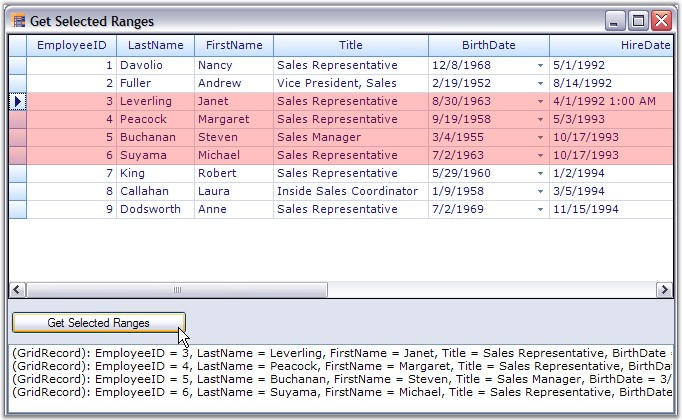

The selections that are made by the user are saved into a collection named TableModel.SelectedRanges. If the Selection option is turned on, then the grid will always listen to the selections that are being made and records all those selections into the SelectedRanges collection. You can loop through every selection range of this collection to get the information about the records that have been selected. The SelectedRanges.ActiveRange property gives the current selection range (i.e. last range in the collection).
Example
This example shows how to loop through the SelectedRanges collection to retrieve the information about the records that are being selected.
1. Turn on any type of selection. Here the record-based selection is active. It is enabled by setting the ListBoxSelectionMode property to a value other than None. You could set the selection colors as well.
|
[C#]
this.gridGroupingControl1.TableOptions.ListBoxSelectionMode = SelectionMode.MultiExtended; this.gridGroupingControl1.TableOptions.ListBoxSelectionColorOptions = GridListBoxSelectionColorOptions.DrawAlphablend; this.gridGroupingControl1.TableModel.Options.AlphaBlendSelectionColor = Color.Red; |
|
[VB.NET]
Me.gridGroupingControl1.TableOptions.ListBoxSelectionMode = SelectionMode.MultiExtended Me.gridGroupingControl1.TableOptions.ListBoxSelectionColorOptions = GridListBoxSelectionColorOptions.DrawAlphablend Me.gridGroupingControl1.TableModel.Options.AlphaBlendSelectionColor = Color.Red |
2. The below code loops through the ranges of all the selections and write the record values that have been selected to a listbox control.
|
[C#]
foreach (GridRangeInfo range in gridGroupingControl1.TableModel.SelectedRanges) { if (range.IsRows) { for (int i = range.Top; i <= range.Bottom; i++) { Record rec = gridGroupingControl1.Table.DisplayElements[i].GetRecord(); listBox1.Items.Add(rec.ToString()); } } } |
|
[VB.NET]
For Each range As GridRangeInfo In gridGroupingControl1.TableModel.SelectedRanges If range.IsRows Then Dim i As Integer = range.Top Do While i <= range.Bottom Dim rec As Record = gridGroupingControl1.Table.DisplayElements(i).GetRecord() listBox1.Items.Add(rec.ToString()) i += 1 Loop End If Next range |
3. Here is a sample screenshot.

Figure 370: Retrieving Information about Selected Records by using the SelectedRanges Collection